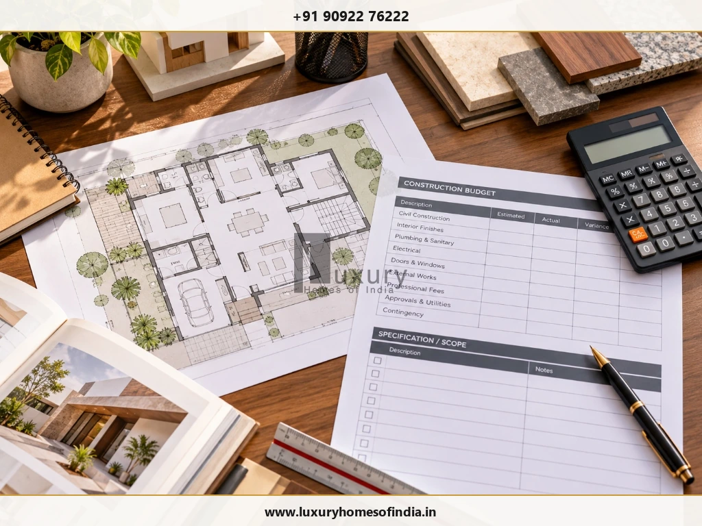
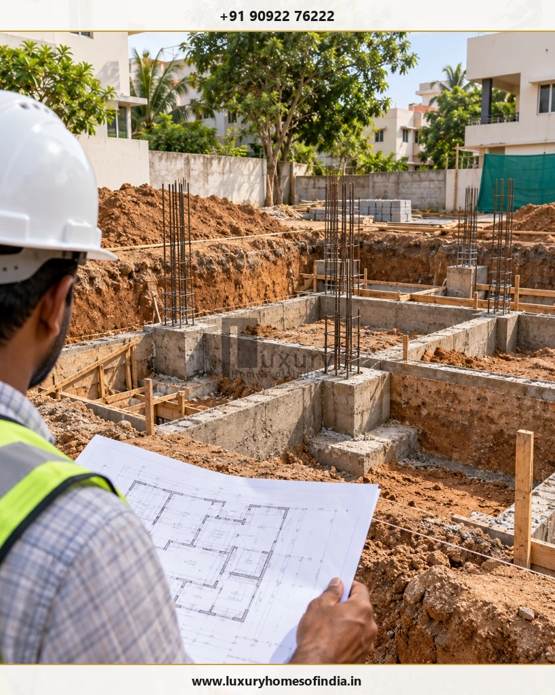
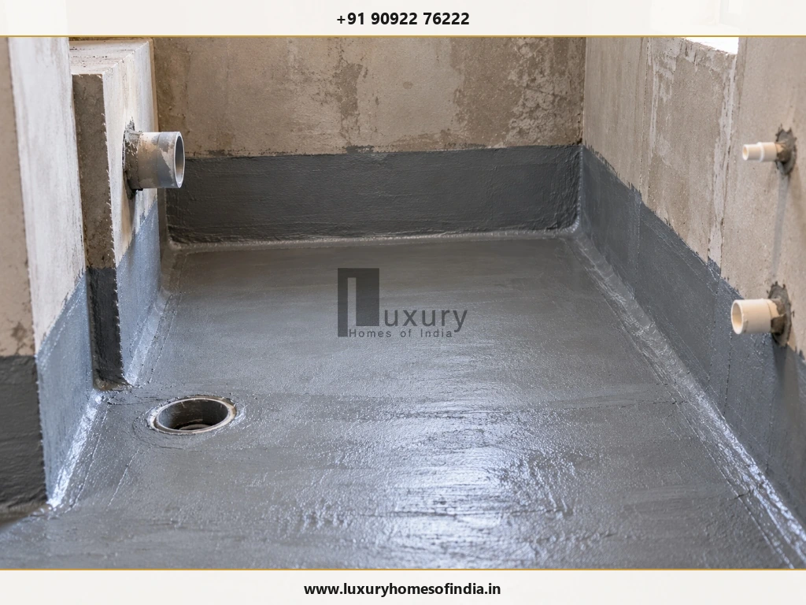

Building a house in Chennai on a controlled budget starts with the right design, clear construction drawings and a well-defined scope of work. The most reliable ways to reduce house construction cost are to optimise the usable floor area, finalise decisions before work begins, compare contractor quotations on identical specifications, plan material procurement and prevent avoidable rework. Homeowners should also budget separately for professional fees, approvals, water storage, external works and essential interiors. Structural design, reinforcement, waterproofing and electrical safety should never be compromised to achieve a lower initial quotation. A practical cost-control process combines informed design choices with written specifications, milestone-based monitoring and professional oversight. The aim is not simply to spend less at the beginning, but to make informed decisions that keep the house functional, durable and financially manageable throughout construction.

Contemporary Indian independent residence demonstrating budget-conscious elegance: clean geometric massing, exposed wire-cut brick accents, durable exterior coatings, and optimised spatial efficiency.
Why Construction Cost Control Starts Before the First Brick Is Laid
The final cost of a house depends on more than its built-up area. Site conditions, foundation requirements, design complexity, material specifications, labour, services, finishes and the contractor's inclusions all influence the amount a homeowner needs to spend.
A low initial quotation can become expensive if essential work has been excluded, specifications are unclear or changes are priced separately after construction begins.
For homeowners in Chennai, a better starting point is a coordinated plan covering four areas:
- Design: Build only the space and features your household actually needs.
- Specification: Decide what materials, finishes and services the contractor must provide.
- Execution: Coordinate trades, deliveries, inspections and changes.
- Financial control: Track commitments and payments against the total project budget.
The following steps help turn these principles into practical decisions.
1. Establish a Complete Project Budget Before Finalising the Design
Start with the maximum amount you can realistically allocate to the entire project, not just the main construction contract.

Coordinated cost-control desk: itemised residential construction budget worksheet, structural layout blueprint, material samples, and specification schedule.
Your budget should distinguish between the building itself and the additional expenses required to make the property usable.
| Budget Category | Items to Identify |
|---|---|
| Core construction | Foundation, structural work, masonry, plastering and agreed finishes |
| Professional services | Architectural design, structural engineering and other required services |
| Permissions | Applicable planning, building permit and statutory charges |
| Site preparation | Clearing, excavation, levelling and filling where required |
| Utilities | Sump, overhead tank, pumps, drainage and connections |
| External works | Compound wall, gate, driveway, paving and landscaping |
| Interiors | Kitchen, wardrobes, lighting, furniture and appliances |
| Contingency | Allowance for identified uncertainties and approved changes |
Check each item against the proposed contract. Some may be included in the construction package, while others may require separate quotations.
2. Design for Useful Space Rather Than Maximum Built-Up Area
Every additional area can increase several cost components, including structural work, masonry, flooring, painting and building services.
The goal is not to make rooms uncomfortably small. It is to avoid paying for space that does not improve the way your household lives.
Consider:
- Reducing unnecessarily long corridors and circulation areas.
- Planning room dimensions around furniture and daily activities.
- Coordinating kitchen, dining and utility areas for efficient daily workflows.
- Avoiding complicated geometry that serves no functional purpose.
- Planning storage (built-in wardrobes, lofts) before fixing room dimensions.
- Selecting appropriate window and door sizes to optimise ventilation and natural daylight.
- Considering future expansion before designing the foundation and structure.
A compact, well-organised plan may provide better day-to-day functionality than a larger house with poorly used spaces. The most economical arrangement depends on the plot, setbacks, applicable building rules, orientation, household requirements and structural design.
3. Finalise Drawings and Reduce Changes During Construction
Changes made after work begins can result in demolition, replacement materials, additional labour and schedule disruption.
Before construction, coordinate the following wherever practical:
- Architectural floor plans and elevations.
- Structural drawings and foundation design.
- Door and window schedules with clear dimensions.
- Electrical point layouts and equipment locations.
- Plumbing, drainage and water-storage arrangements.
- Kitchen and wardrobe dimensions.
- Flooring, paint and finish specifications.
- External works and utility requirements.
Not every future decision must be finalised at once, but decisions that affect structural work, concealed services or finished surfaces should receive particular attention.
4. Compare Contractor Quotations on an Identical Scope
A contractor's headline rate is meaningful only when you know what it includes. Two quotations for the same house may differ because of material allowances, workmanship scope, service provisions, exclusions or finishing standards.
Documented material specification matrix: side-by-side assessment of window profiles, masonry blocks, tiles, CPVC pipes, wiring, and contractor checklists.
Use the same approved drawings and specification schedule when requesting quotations.
| Comparison Item | Questions to Ask |
|---|---|
| Structure | What structural work and specified materials are included? |
| Masonry and plastering | What wall systems, thicknesses and finish standards apply? |
| Flooring | What product allowance, laying work and skirting are covered? |
| Doors and windows | Which materials, hardware, glazing and dimensions are specified? |
| Electrical work | Which wiring, protection, points, fixtures and accessories are included? |
| Plumbing | Which pipe systems, valves, fixtures and installation tasks are covered? |
| Waterproofing | Which areas, system and testing requirements are included? |
| Painting | What surface preparation, primer and finishing coats are specified? |
| External works | Are the compound wall, sump, gate, drainage and paving included? |
| Commercial terms | What are the exclusions, payment milestones and variation procedures? |
5. Select Materials for Suitability, Durability and Installed Cost
Material selection should reflect the purpose of each component, the project's technical requirements, expected maintenance and available budget.
A low purchase price may not translate into lower overall cost if the product requires more labour, creates excessive waste or is unsuitable for its intended application.
| Component | Cost-Control Approach |
|---|---|
| Cement and concrete | Follow the approved technical requirements and compare equivalent supply terms |
| Reinforcement steel | Retain the grade and specifications required by the structural design (Fe550D) |
| Bricks or blocks | Compare suitable products on performance, installed cost and availability |
| Flooring | Select practical sizes and finishes with predictable installation requirements |
| Doors and windows | Consider standard dimensions where they suit the design |
| Paint | Compare suitable product systems, preparation requirements and maintenance |
| Plumbing | Specify compatible products and document fittings and valves |
| Electrical materials | Meet the applicable safety requirements and specified ratings |
The Bureau of Indian Standards (BIS) provides homeowner guidance on building permits, independent-house construction and construction-related precautions.
6. Plan Foundations and Structural Work Around the Actual Site
Foundation costs should be managed through proper investigation, design and coordination—not by choosing the smallest or cheapest foundation.
Relevant considerations include site conditions, soil characteristics, groundwater, building loads, the intended number of floors and the possibility of future expansion.
Avoidable expenditure can result from incomplete information, late changes or conflicts between structural and service layouts.

Site engineering coordination: engineer reviewing foundation blueprints against cast concrete footings, column starter rebar, and excavated ground levels.
Before work begins:
- Obtain the site information required by the design professional (soil test report).
- Confirm the intended building configuration.
- Coordinate foundation levels with drainage and plumbing.
- Resolve relevant structural and architectural details.
- Clarify the responsibilities for inspection and approval.
7. Coordinate Electrical and Plumbing Layouts Before Concealed Work
Moving a concealed pipe or electrical point after plastering or tiling can involve breaking finished surfaces and paying for rework.
Prepare coordinated service layouts before installation begins.
For electrical work, consider lighting, fans, kitchen appliances, air-conditioning, internet access and required protective devices.
For plumbing, plan bathrooms, kitchen connections, water storage, pumps, drainage, hot-water provisions and maintenance access.
Future requirements should be considered where they can be accommodated sensibly without adding unnecessary complexity.
8. Standardise Finishes Where Doing So Makes Sense
A large number of different materials, custom dimensions and specialist details can increase procurement and installation complexity.
Standardisation may help when it does not compromise the design or functional requirements. Examples include:
- Using a coordinated range of flooring materials throughout common zones.
- Repeating compatible door and window details to benefit from bulk fabrication.
- Limiting the number of paint finishes and colour palettes.
- Selecting readily available, locally sourced products where appropriate.
- Reducing decorative details that require specialist off-site fabrication.
When comparing flooring, include product cost, wastage, adhesive or mortar, skirting, labour and cutting requirements. For doors and windows, compare frame material, hardware, glazing and installation.
9. Prioritise Essential Interiors and Phase Optional Purchases
Interior costs can increase quickly when customised furniture, decorative ceilings, premium kitchen fittings and feature walls are added without a defined scope.
Separate essential requirements from optional upgrades. A practical sequence could be:
- Essential kitchen storage and work surfaces.
- Necessary bedroom storage (functional wardrobes).
- Functional lighting and electrical fittings.
- Required bathroom fixtures and accessories.
- Essential loose furniture and appliances.
- Optional decorative ceilings, wall panelling and premium finishes.
The correct sequence depends on your household's needs and the main construction contract.
10. Include External Works and Utilities in the Original Plan
The house itself is only one part of the completed property. A budget that overlooks site levelling, water storage, compound walls, gates, drainage and paving may leave insufficient funds for essential work near completion.
Prepare a separate schedule covering:
- Compound wall and main gate.
- Underground sump and overhead water tank.
- Pumps, water filters and plumbing connections.
- Surface storm drainage and rainwater harvesting arrangements.
- Driveway, car parking pavers and pedestrian pathways.
- Site filling, levelling and anti-termite perimeter treatment.
- Outdoor security lighting and boundary landscaping.
- Applicable utility connections (TANGEDCO EB connection and CMWSSB Metro Water).
11. Protect Waterproofing, Structural Safety and Essential Workmanship
The right place to control costs is unnecessary complexity, avoidable waste and poorly coordinated work—not essential technical provisions.
Waterproofing deserves particular attention in bathrooms, terraces, balconies and other areas exposed to moisture. The specified system, surface preparation, installation requirements and any testing should be clear in the project documentation.

Essential quality protection: elastomeric waterproofing membrane seamlessly turned up the parapet walls with neatly sealed drainage collar sleeves.
Structural work, electrical safety, plumbing and workmanship should likewise meet the requirements of the design and applicable regulations.
12. Schedule Material Purchases and Track Wastage
Unplanned procurement can lead to emergency orders, additional transport charges, damaged materials and excess inventory.
Coordinate purchasing with the construction schedule:
- Estimate quantities directly from approved drawings.
- Compare suppliers against identical specifications.
- Confirm delivery charges and lead times in advance.
- Order according to immediate work requirements to minimise site damage.
- Store cement and steel in dry, elevated, weather-protected shelters.
- Record deliveries, usage and unused stock.
- Review substitutions before purchasing.
Bulk purchases may be useful when quantities are predictable and suitable storage is available. Buying too early can tie up cash or increase the risk of deterioration.
13. Tie Payments to Documented Progress
A construction payment plan should reflect the contract, agreed milestones and work actually completed. Clarify what each payment covers, which deliverables are expected and how completion will be checked.
A project may have milestones for foundation work, structural construction, masonry, services, finishing and handover, but the precise schedule must match the agreement.
Maintain a record of:
- Original contract amount.
- Approved variations and change orders.
- Work completed at each stage.
- Payments made to date.
- Outstanding commitments.
- Remaining project budget.
- Unresolved quality issues and punch-list items.
14. Verify Approvals and Retain Project Records
Planning permission and building permit requirements depend on the property, proposed building and competent authority.
Greater Chennai Corporation publishes information on building permits, applicable procedures and supporting documentation. The Corporation also announced the integration of its planning-permission application process with the Tamil Nadu Single Window Portal. Confirm the current process and applicable authority for your property before applying.
Before construction, clarify:
- Which approvals apply to the property (CMDA approval or DTCP).
- Which professional is responsible for preparing and submitting drawings.
- Which documents are required (Patta, EC, FSI calculations).
- What charges are applicable.
- Which approved plans and permits must be retained on site.
15. Keep a Contingency Reserve and Review Trade-Offs Before Spending
Even a well-planned project may encounter uncertainty because of site conditions, changes, procurement or other circumstances.
Separate known exclusions from genuinely uncertain costs. A contingency reserve should reflect the completeness of the design, site risks, contract terms and work remaining—not an arbitrary universal percentage.
When a quotation exceeds the available budget, review the least consequential items first:
- Optional decorative features.
- Custom finishes that have suitable, durable standard alternatives.
- Unnecessary built-up area or redundant circulation.
- Complicated architectural details that serve no functional purpose.
- Non-essential furniture and purchases that can be phased comfortably.
Do not use structural reductions or unsuitable materials as the default response to a budget overrun.
A Practical House Construction Budget Worksheet
Rather than relying on a generic per-square-foot rate, prepare a project-specific budget sheet:
| Budget Item | Your Estimate |
|---|---|
| Core construction contract | ₹ ____________ |
| Professional services | ₹ ____________ |
| Approvals and statutory charges | ₹ ____________ |
| Site preparation | ₹ ____________ |
| External works and utilities | ₹ ____________ |
| Essential interiors | ₹ ____________ |
| Other identified expenses | ₹ ____________ |
| Contingency reserve | ₹ ____________ |
| Total Planned Budget | ₹ ____________ |
These are planning categories, not a current Chennai price estimate. Obtain project-specific quotations based on the actual site, drawings, specifications and contract inclusions.
Home Construction Cost-Control Checklist
- Set a total project budget before finalising the design.
- Compare layouts for usable space and architectural complexity.
- Coordinate architectural, structural and MEP service drawings.
- Identify site soil conditions and foundation requirements early.
- Obtain comparable, itemised contractor quotations.
- Document material specifications and finish allowances in writing.
- Plan external works, water storage and utility connections.
- Separate essential interiors from optional upgrades.
- Protect structural safety, reinforcement grades, and waterproofing.
- Schedule material deliveries and track on-site wastage.
- Tie payments strictly to agreed physical milestones.
- Record and price every variation before execution.
- Verify applicable municipal approvals and retain documentation.
- Maintain an appropriate contingency reserve for genuine unknowns.
Frequently Asked Questions
Plan Your Home Construction With Greater Clarity
Reducing house construction cost is about making informed decisions, not simply choosing the cheapest materials or contractor.
A practical design, complete specifications, comparable quotations, coordinated services and disciplined project monitoring help homeowners understand where money is being spent. Structural safety, waterproofing and essential workmanship must remain protected throughout the process.
Planning a Residential Project in Chennai?
Visit Luxury Homes of India to explore our custom residential construction practices. You can also review our comprehensive civil engineering and construction services, browse our portfolio in the LHI project gallery, or contact our team directly to discuss your project requirements.
Direct Engineering Line: +91 90922 76222 | Email: info@luxuryhomesofindia.in
Design Studio: #85, 4th Floor, Lotus Tower, Guindy, Chennai – 600032